Pokémon in the NYPL archives
2018-5-22 12:10:06
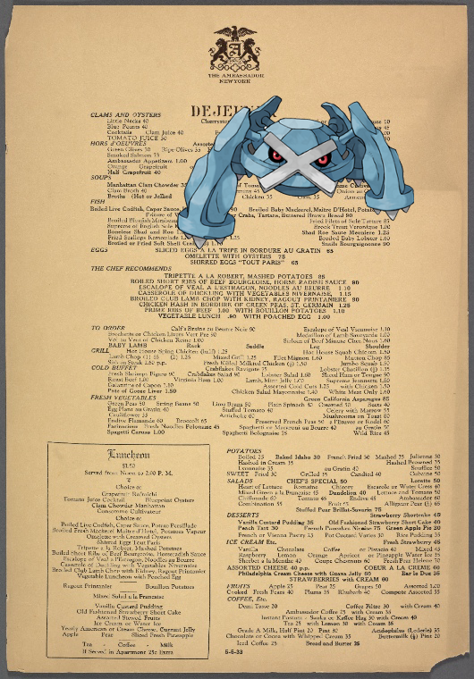
Metagross +
The Ambassador
!
2018-5-22 10:10:04
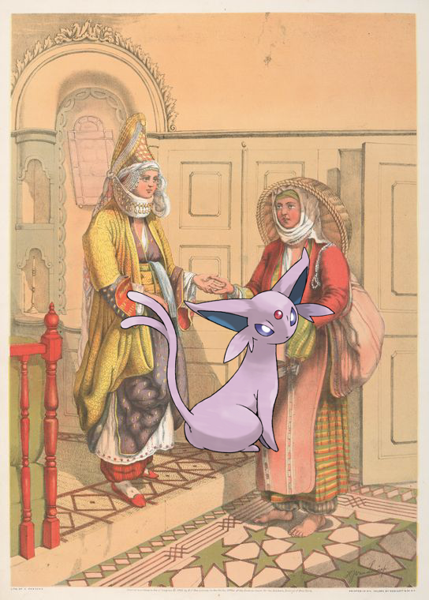
Espeon on
Gypsy Fortune-Telling
.
2018-5-22 08:10:04
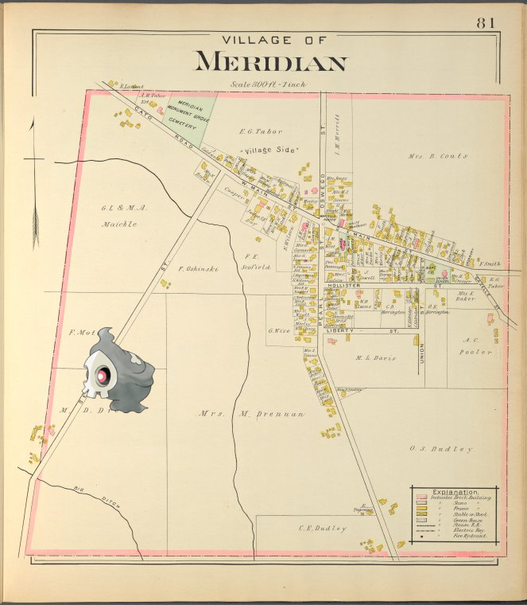
Duskull –
Cayuga County, Right Page [Village of Meridian]
.
2018-5-22 06:10:04
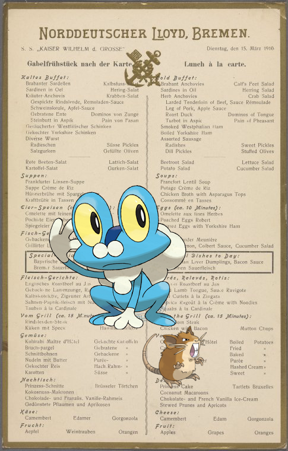
Froakie, Raticate ;
Lunch a la carte held by Nordeutscher Lloyd Bremen at on Board S.S. 'Kaiser Wilhelm der Grosse'
2018-5-22 04:10:03
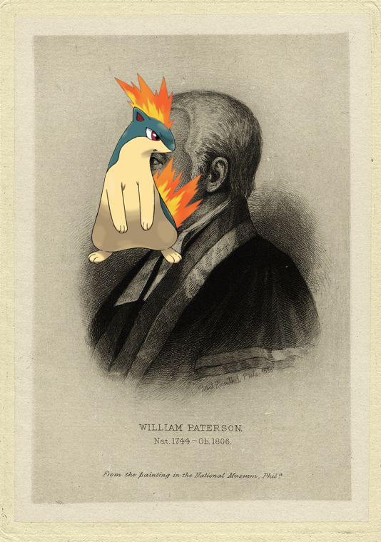
Quilava |
William Paterson.
2018-5-22 02:10:08
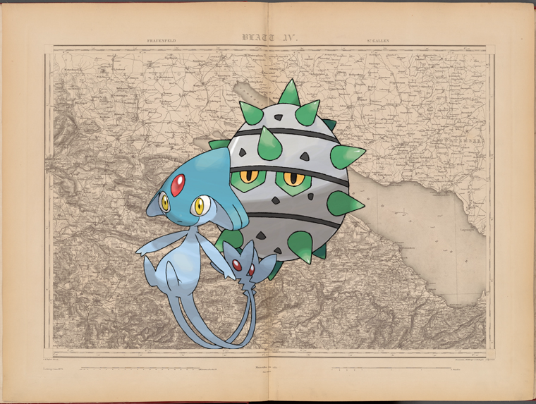
Ferroseed, Azelf –
Blatt IV: Frauenfeld, St. Gallen
2018-5-22 00:10:04
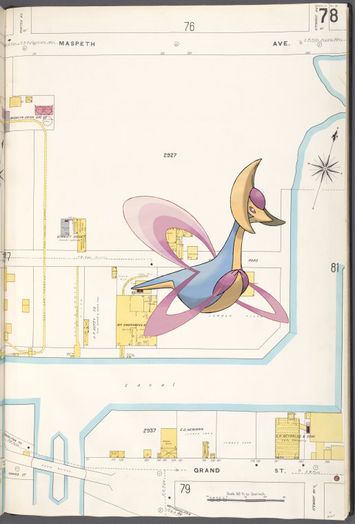
Cresselia @
Brooklyn V. 9, Plate No. 78 [Map bounded by Maspeth Ave., Grand St.]
!
2018-5-21 22:10:04
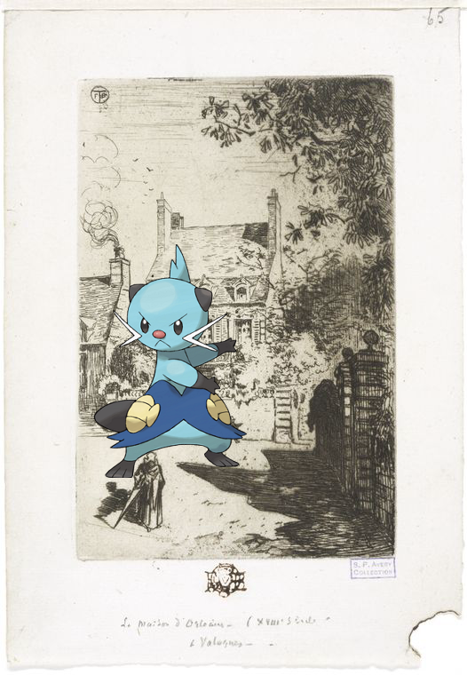
Dewott on
En province, la maison d'Orléans (Valognes).
2018-5-21 20:10:08
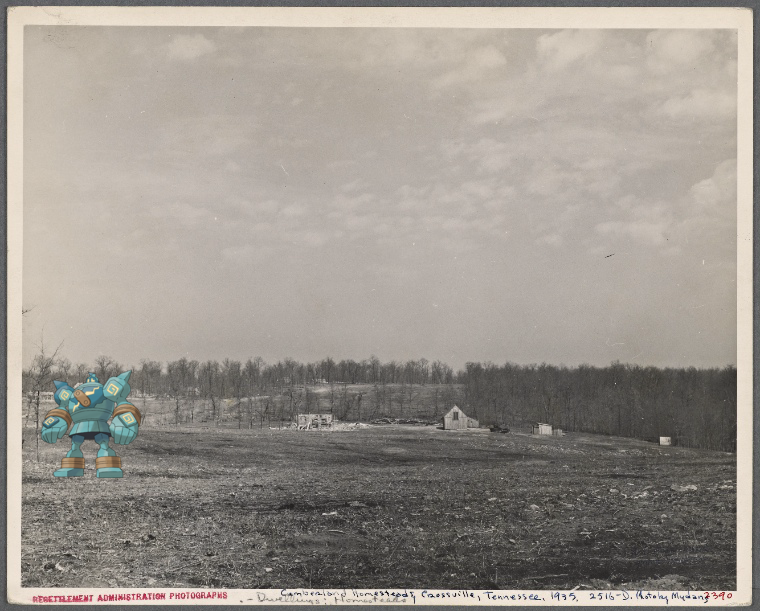
Golurk ;
Cumberland Homesteads, Crossville, Tennessee.
!
2018-5-21 18:10:07
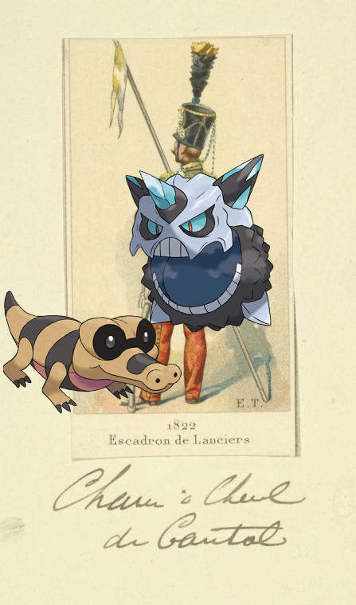
Glalie, Sandile ;
France, 1822-1823
.
2018-5-21 16:12:27
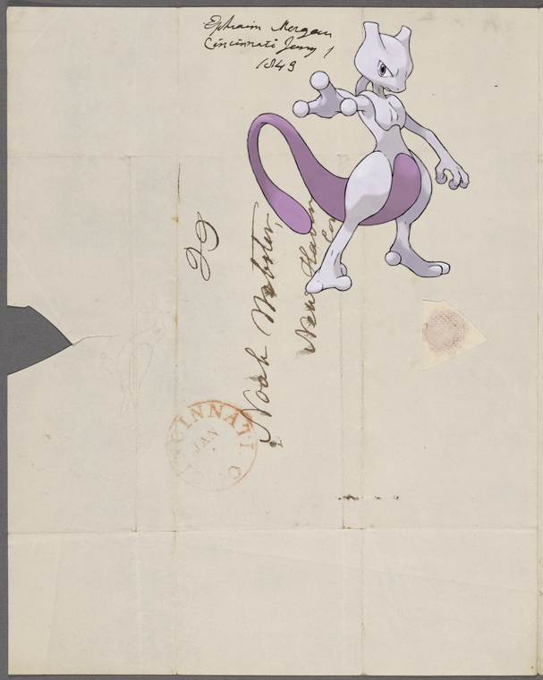
Mewtwo ;
1842-1843, n.d.
!
2018-5-21 14:10:03
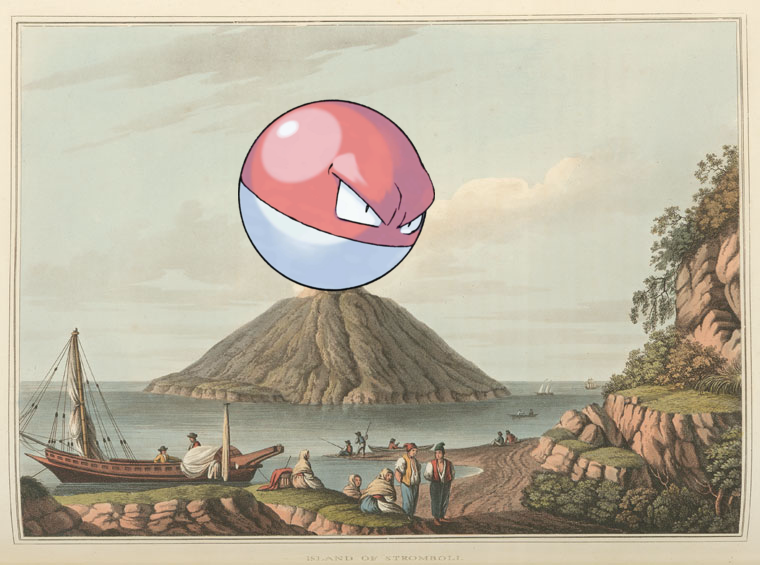
Voltorb on
Island of Stromboli
2018-5-21 12:10:05
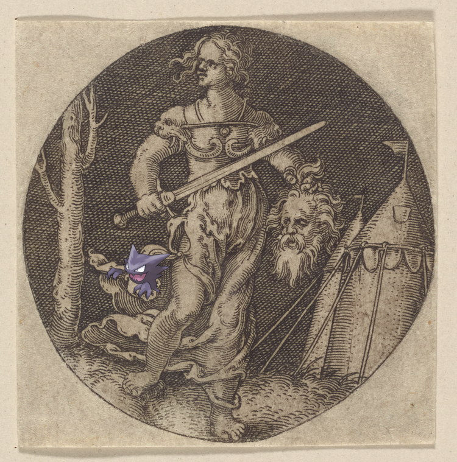
Haunter ;
Judith
2018-5-21 10:10:04
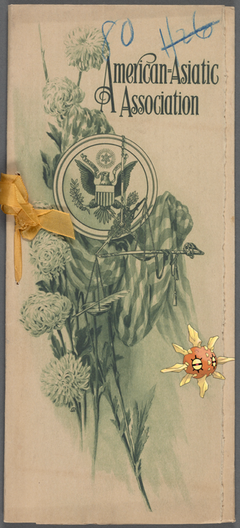
Solrock ;
Delmonicos
.
2018-5-21 08:10:06
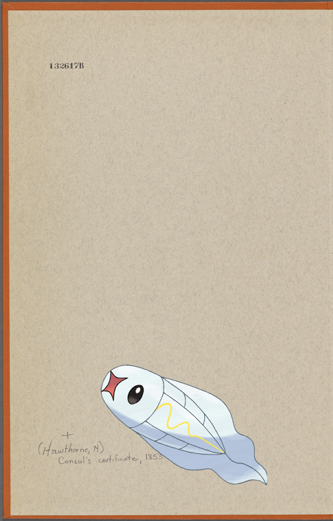
Tynamo –
Consul's certificate, Liverpool, Feb. 15, 1855, relating to cargo of "Pacific," signed by Nathaniel Hawthorne.
.
2018-5-21 06:10:03
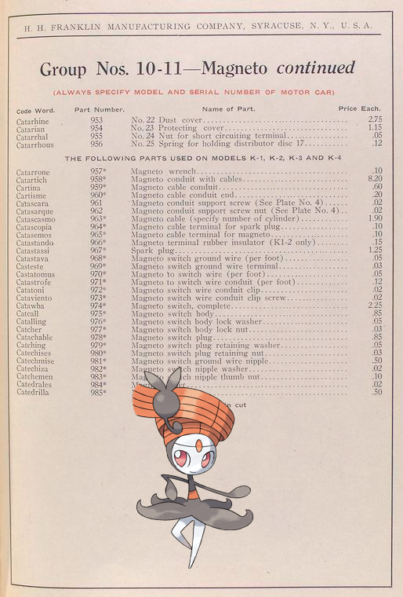
+
Group Nos. 10 - 11 - Magneto continued [Parts price list].
!
2018-5-21 04:10:04
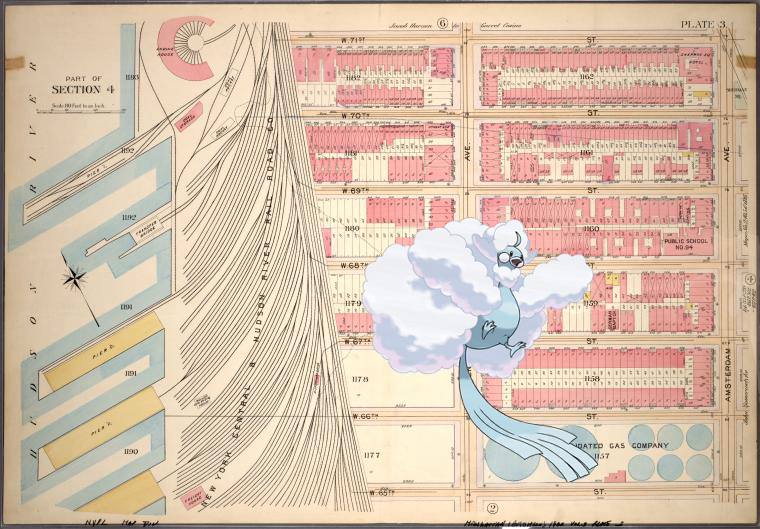
Altaria –
Plate 3, Part of Section 4: [Bounded by W. 71st Street, Amsterdam Avenue, W. 65th Street and (New York Central & Hudson River Rail Road Co.) West End Avenue]
2018-5-21 02:10:09
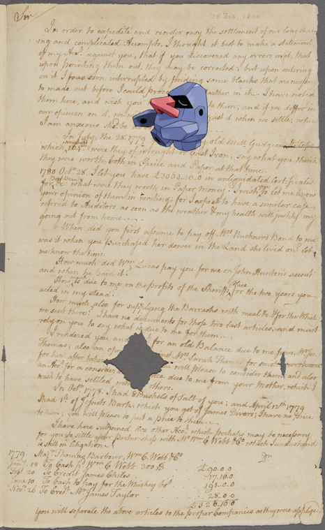
Nosepass –
Letter from James Madison, Sr
!
27
|
26
|
25
|
24
|
23
|
22
|
21
|
20
|
19
|
18
|
17
|
16
|
15
|
14
|
13
|
12
|
11
|
10
|
9
|
8
|
7
|
6
|
5
|
4
|
3
|
2
|
1
|
0